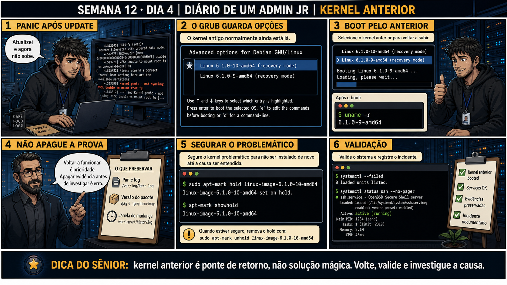

Semana 12 · Dia 4 | Nível Júnior
Voltar pro Kernel Anterior
kernel anterior é ponte de retorno, não solução mágica — volte, valide e investigue a causa
ANTES DE ALTERAR, OBSERVE. DEPOIS DE ALTERAR, VALIDE.
1. O chamado
#7534
PRIORIDADE ALTA
09:30
aberto por: você mesmo — pós-atualização
host: VM de laboratório · serviço: boot — kernel panic
"Atualizei o kernel e agora não sobe. Kernel panic - not syncing: VFS: Unable to mount root fs."
Reiniciar de novo sem mudar nada só repete o mesmo panic. Onde no menu do GRUB está a saída pra esse caso?
💡 Passa o mouse nas palavras destacadas pra ver uma dica rápida — clica se quiser a explicação completa com analogia.
2. O sênior te conta
Semana passada, outro ticket
Depois de um kernel panic pós-atualização, um admin júnior voltou pro kernel anterior via GRUB, o sistema
subiu normal, e ele — aliviado — apagou o log do panic e removeu o pacote do kernel problemático "pra
limpar a bagunça", achando que o incidente estava encerrado. Duas semanas depois, um patch de segurança
urgente precisou ser aplicado, e ninguém sabia mais se o problema anterior tinha sido resolvido ou se ia
se repetir — porque a evidência que explicaria a causa raiz tinha sido apagada. O time teve que aplicar o
patch "no escuro", sem saber o que exatamente tinha causado o panic da vez anterior, e passou a noite de
plantão esperando pra ver se ia acontecer de novo. A correção não foi "não apague nada nunca" — foi
entender que "voltar a funcionar" e "encerrar o incidente" são coisas diferentes: o sistema funcionando
de novo é o primeiro passo, não o último. O ponto que fica: um incidente só está de fato fechado quando a
causa é entendida, não quando o sintoma some.
3. Decodificador de conceitos
Clica em qualquer termo pra ver a definição completa e uma analogia do dia a dia:
4. Ferramentas e leitura da evidência
| Comando | O que observar e por que importa |
|---|---|
uname -r | Confirma qual versão de kernel realmente está rodando após o boot. |
apt-mark hold linux-image-X | Impede que o kernel problemático seja reinstalado/atualizado de novo sem querer. |
apt-mark showhold | Confirma quais pacotes estão retidos no momento. |
systemctl --failed | Lista serviços que falharam — parte da validação após o reboot no kernel anterior. |
Advanced options for Debian GNU/Linux Linux 6.1.0-10-amd64 (recovery mode) > Linux 6.1.0-9-amd64 (recovery mode) Booting Linux 6.1.0-9-amd64 ... $ uname -r 6.1.0-9-amd64 $ sudo apt-mark hold linux-image-6.1.0-10-amd64 linux-image-6.1.0-10-amd64 set on hold. $ apt-mark showhold linux-image-6.1.0-10-amd64 $ systemctl --failed 0 loaded units listed.
5. Laboratório guiado — marca conforme for testando
Segurança: execute os testes apenas em VM descartável e confirme nomes de discos, hosts e arquivos antes de cada comando.
- Ação: em VM de laboratório, observe as entradas em Advanced options no menu do GRUB (mesmo sem simular um panic real).Advanced options for Debian GNU/Linux Linux 6.1.0-10-amd64 (recovery mode) > Linux 6.1.0-9-amd64 (recovery mode)
🔍 Detalhar esse menu
- Advanced options for Debian GNU/Linux
- Submenu do GRUB que lista TODAS as versões de kernel instaladas, não só a mais recente — a 'rota de fuga' fica aqui.
- Linux 6.1.0-10-amd64
- A versão mais nova, instalada por último — a suspeita de causar o problema.
- > Linux 6.1.0-9-amd64
- A versão anterior, selecionada (indicada pelo '>') para o boot de teste — ainda presente no disco porque o gerenciador de pacotes não remove kernels antigos automaticamente.
Resultado esperado: pelo menos duas versões de kernel listadas, se houver mais de uma instalada.Por quê: confirmar visualmente que a "rota de fuga" existe antes de precisar dela é parte de conhecer o ambiente.Se o seu resultado foi diferente
o menu "Advanced options" só mostra UMA versão de kernel → normal numa VM nova sem atualizações ainda — rodesudo apt upgrade, reinicie uma vez pra instalar o kernel novo (sem remover o antigo), e só então repita o exercício com as duas versões disponíveis. - Ação: selecione uma versão específica e, após o boot, confirme com uname -r.$ uname -r 6.1.0-9-amd64
🔍 Detalhar esse comando
- uname -r
- Mostra a versão (release) do kernel que está REALMENTE rodando neste boot — a forma de confirmar que a seleção no menu do GRUB funcionou como esperado.
Resultado esperado: versão exibida corresponde à selecionada no menu. - Ação: rode dpkg -l | grep linux-image para listar as versões de kernel instaladas no sistema.$ dpkg -l | grep linux-image ii linux-image-6.1.0-9-amd64 6.1.0-9 ii linux-image-6.1.0-10-amd64 6.1.0-10
🔍 Detalhar esse comando
- dpkg -l
- Lista todos os pacotes instalados no sistema, com seu estado (ii = instalado e configurado corretamente).
- | grep linux-image
- Filtra a lista só para os pacotes de imagem de kernel — mostra exatamente quais versões estão disponíveis para segurar (hold) ou remover.
Resultado esperado: lista com as versões disponíveis, confirmando quais podem ser seguradas com hold.🧑🏫 Aqui entra o Mentor (em breve): se só houver uma versão de kernel instalada (sem fallback disponível), este é o ponto onde o chat com o Sênior-IA vai ajudar a planejar uma estratégia de recuperação alternativa. - Ação: pratique apt-mark hold numa versão de kernel (não a que está em uso) e confirme com apt-mark showhold.$ sudo apt-mark hold linux-image-6.1.0-10-amd64 linux-image-6.1.0-10-amd64 set on hold. $ apt-mark showhold linux-image-6.1.0-10-amd64
🔍 Detalhar esse comando
- sudo
- Necessário para alterar o estado de gerenciamento de pacotes.
- apt-mark
- Ferramenta para marcar pacotes com comportamentos especiais no gerenciador de pacotes.
- hold
- Marca o pacote como 'em espera' — o apt vai ignorá-lo em futuras atualizações (apt upgrade), mesmo que uma versão nova apareça.
- linux-image-6.1.0-10-amd64
- O pacote do kernel problemático, travado para não ser reinstalado/atualizado por engano enquanto o kernel anterior continua em uso.
Resultado esperado: pacote listado como retido (hold).Cilada comum: aplicar hold e depois considerar o incidente encerrado — hold só impede regressão, não substitui investigar a causa do panic. - Ação: rode systemctl --failed e systemctl status ssh --no-pager, documentando o resultado como parte da validação.Resultado esperado: 0 unidades falhadas e ssh ativo, reproduzindo o painel 6 da prancha de hoje.
6. Antes de ver as opções — tenta responder
🧠 Recall ativo: por que o kernel anterior geralmente continua disponível no menu do GRUB mesmo
depois de uma atualização de kernel?
Atualizações de
kernel
normalmente INSTALAM uma versão nova ao lado da antiga, sem remover a anterior imediatamente. O
GRUB
detecta ambas e lista as duas em "Advanced options" — isso te dá uma rota de fuga pronta se a versão
nova causar pane.
7. Questão comentada — clica numa alternativa
Após atualizar o kernel, o boot mostra "Kernel panic - not syncing: VFS: Unable
to mount root fs". Qual é a ação correta imediata?
💡 Analogia do Sênior para Fixar: Manter versões antigas de kernel instaladas no /boot é como guardar a chave reserva da casa antiga: se a nova atualização de kernel quebrar drivers, você escolhe o anterior no GRUB.
7.1 O sistema voltou a funcionar com o kernel anterior. Um colega quer apagar o log do panic "pra deixar tudo limpo"
O painel 4 da prancha de hoje é claro: "Voltar a funcionar é prioridade. Apagar evidência antes de investigar é erro."
Por que preservar o panic log e a versão do pacote é importante mesmo com o
sistema já funcionando de novo?
💡 Analogia do Sênior para Fixar: Configurar 'GRUB_DEFAULT=saved' no /etc/default/grub permite ao sistema memorizar o último kernel funcional que deu boot com sucesso.
7.2 "apt-mark hold remove o kernel problemático do disco?"
Um colega acha que hold e remove são a mesma coisa, só com nomes diferentes.
Qual é a diferença real entre eles?
💡 Analogia do Sênior para Fixar: Remover kernels antigos obsoletos com segurança usando o gerenciador de pacotes (apt autoremove) evita que a partição /boot lote e bloqueie novas atualizações de segurança.
8. Procedimento profissional
- No panic pós-atualização, verifique Advanced options no menu do GRUB.
- Selecione o kernel anterior, ainda listado, e confirme com uname -r.
- Preserve o log do panic e a versão exata do pacote problemático.
- Use apt-mark hold no kernel problemático até entender a causa.
- Valide com systemctl --failed e status dos serviços críticos, e documente o incidente.
Prevenção
Trate "voltar a funcionar" e "fechar o incidente" como dois marcos separados e explícitos
no registro de qualquer chamado — nunca deixe implícito que o segundo aconteceu só porque o primeiro
aconteceu. Um incidente só fecha de verdade quando a causa raiz do panic foi identificada e documentada,
mesmo que o sistema já esteja de volta ao ar há horas.
9. Validação e encerramento
- O kernel anterior foi selecionado via Advanced options, sem reinstalar nada.
- uname -r confirmou a versão realmente em uso após o boot.
- O log do panic e a versão do pacote problemático foram preservados, não apagados.
- apt-mark hold impediu que o kernel problemático voltasse sem querer.
Rollback e limites
apt-mark hold é reversível a qualquer momento com apt-mark unhold — use isso só
depois de entender e corrigir a causa da pane, nunca antes. Selecionar um kernel diferente no GRUB não é
destrutivo: o kernel anterior continua disponível até você decidir removê-lo deliberadamente.
💡 Sobre repetição espaçada: "voltar a funcionar é prioridade, mas não apague
evidência" conecta com a Semana 10 (preservar logs antes de qualquer correção de automação) — mesma
disciplina de investigação. O Anki vai conectar os dois.
10. Resposta final
Alternativa correta: A. Nesta aula, a ação certa foi selecionar o
kernel anterior via Advanced options no GRUB, sem apagar nada. O ponto central do caso é este: kernel
anterior é ponte de retorno, não solução mágica — volte, valide e investigue a causa.
🔓 O que você desbloqueou hoje
Capacidade de usar o kernel anterior como recuperação segura, preservando
evidência para investigação futura. Amanhã fecha a Fase 1 inteira: a Missão Final combina tudo que você
aprendeu nessas 12 semanas num único incidente contínuo, do chamado às 3 da manhã até o relatório final.